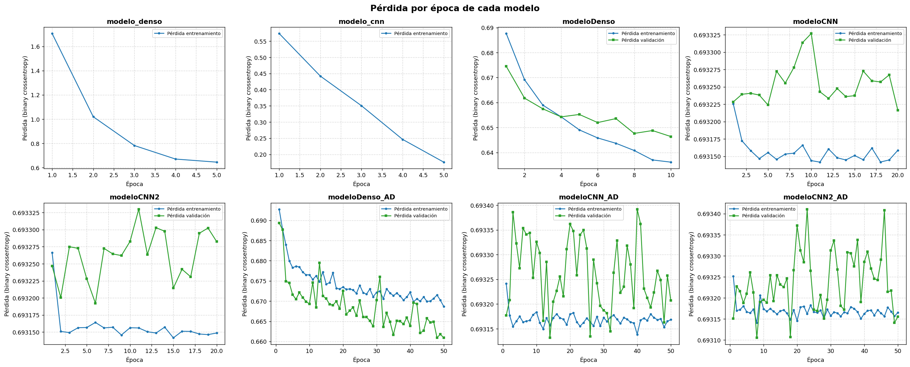
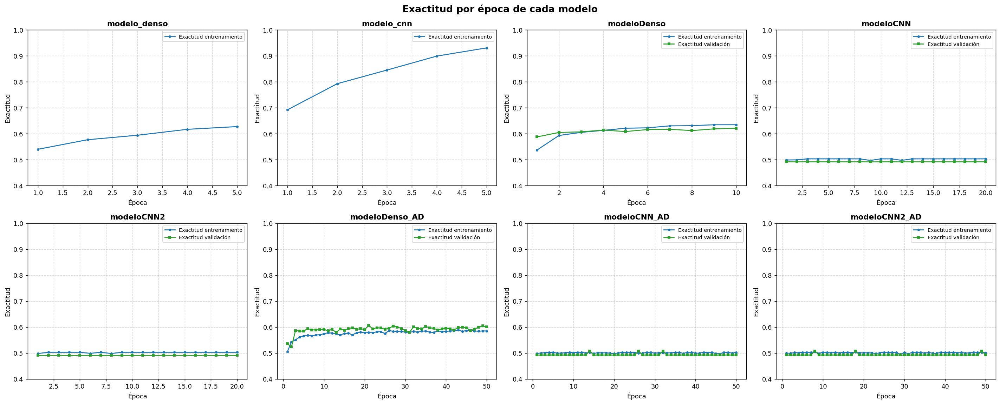
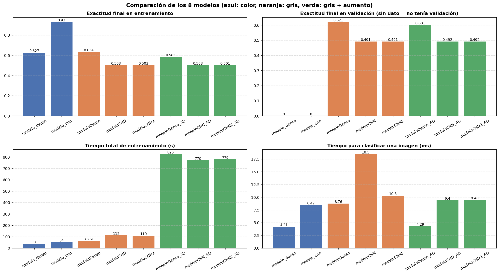
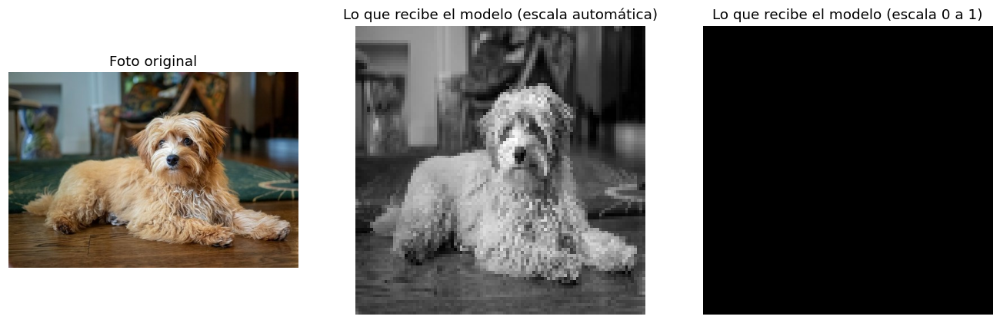
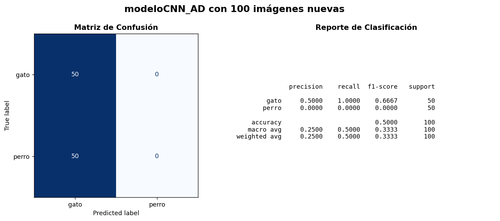
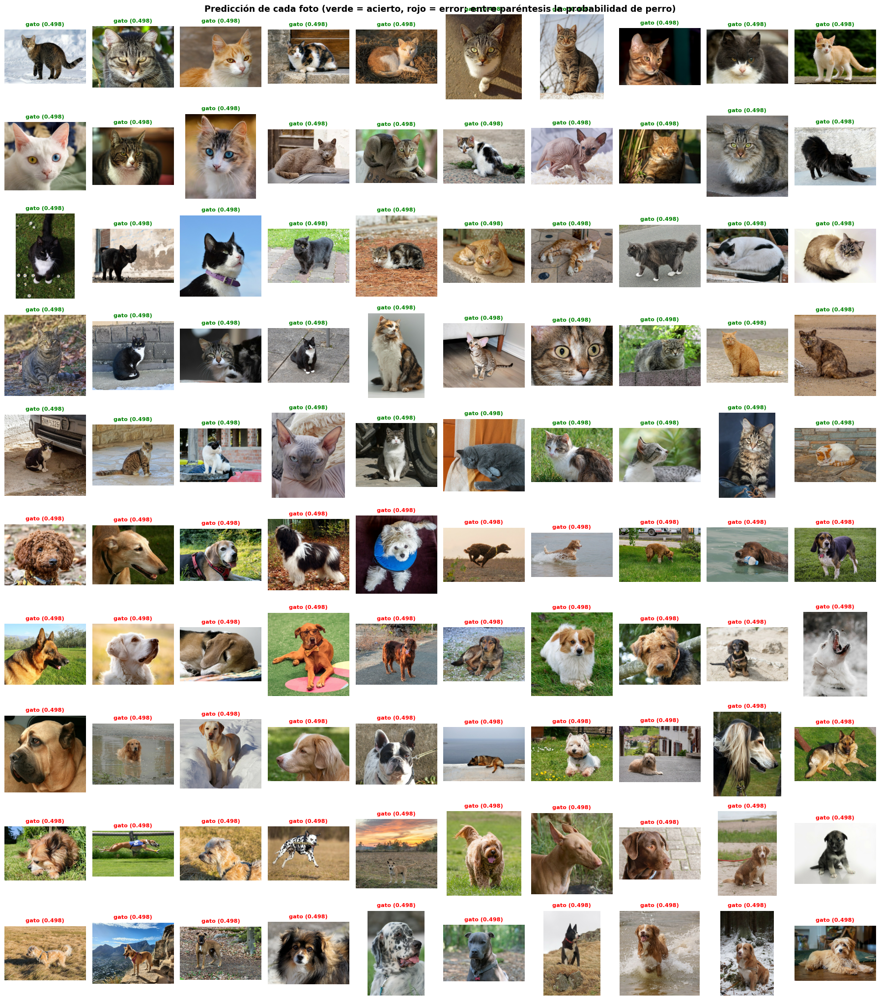
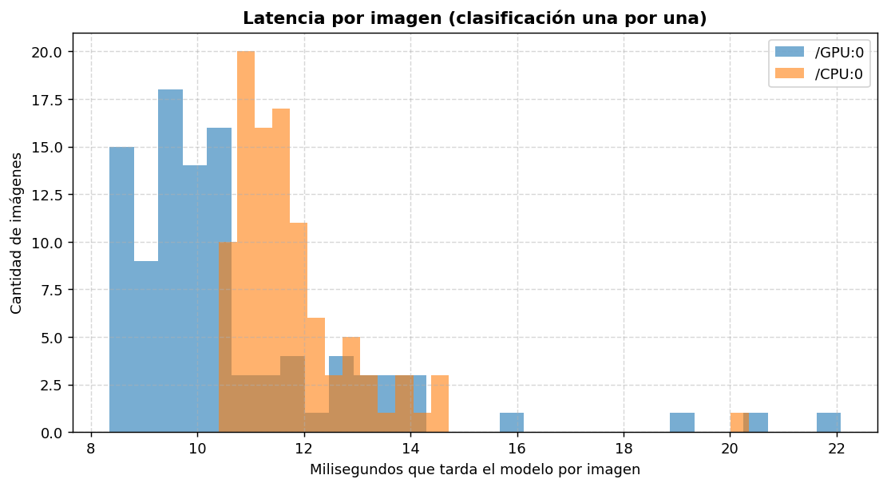

En este trabajo puse a prueba los modelos del cuaderno del profesor (ImageClassification). No cambié su código: lo copié en un cuaderno nuevo, volví a entrenar los 8 modelos y les medí las capas, las pérdidas y cuánto tardan en entrenar y en clasificar. Después guardé el modelo que el profesor eligió guardar (modeloCNN_AD), lo cargué de nuevo y lo usé para clasificar 100 fotos que no están en el dataset: 50 perros y 50 gatos. Al final medí qué tan bien acierta y cuántos recursos gasta.
Los modelos se entrenan con el dataset cats_vs_dogs de TensorFlow Datasets. Cada imagen trae su etiqueta: 0 es gato y 1 es perro. Las clases están casi parejas, así que acertar el 50 % equivale a adivinar.
| Característica | Valor |
|---|---|
| Imágenes del dataset | 23.262 |
| Perros / gatos | 11.604 / 11.658 |
| Tamaño de entrada de los modelos | 100 × 100 (color o escala de grises) |
| Imágenes de prueba externas | 100 (50 perros y 50 gatos, Wikimedia Commons) |
Ejecuté el cuaderno completo en mi computador, dentro de un contenedor Docker con la misma versión de TensorFlow que usa el Colab del profesor.
| Componente | Detalle |
|---|---|
| TensorFlow | 2.20.0 (imagen tensorflow/tensorflow:2.20.0-gpu-jupyter) |
| GPU | NVIDIA GeForce RTX 4070 Laptop, 8 GB |
| CPU | 16 núcleos lógicos |
| RAM disponible para el contenedor | 11,5 GB |
Las 100 fotos externas las saqué de las categorías de imágenes de calidad de perros y gatos de Wikimedia Commons. Revisé una por una para dejar solo fotos reales con un perro o un gato como protagonista: sin dibujos, sin estatuas y sin los dos animales juntos. Las guardé en imagenes_prueba/perros y imagenes_prueba/gatos, y el autor y la licencia de cada una quedaron en fuentes.csv.
El cuaderno tiene tres grupos de modelos. Los dos primeros reciben la imagen a color. Los otros tres la reciben en escala de grises. Los últimos tres son los mismos de escala de grises, pero se entrenan con aumento de datos: en cada época las imágenes se giran, se mueven, se inclinan, se acercan y se voltean al azar. Todos terminan en una neurona con activación sigmoid, que da un número entre 0 y 1: cerca de 0 es gato y cerca de 1 es perro.
| Modelo | Entrada | Capas | Parámetros |
|---|---|---|---|
| modelo_denso | Color | Flatten → Dense(128) → Dense(1) | 3.840.257 |
| modelo_cnn | Color | Conv(32) → Pool → Conv(64) → Pool → Flatten → Dense(128) → Dense(1) | 4.353.217 |
| modeloDenso | Gris | Flatten → Dense(150) → Dense(150) → Dense(1) | 1.522.951 |
| modeloCNN | Gris | Conv(32) → Pool → Conv(64) → Pool → Conv(128) → Pool → Flatten → Dense(100) → Dense(1) | 1.372.873 |
| modeloCNN2 | Gris | Igual a modeloCNN + Dropout(0.5) antes de Flatten | 1.372.873 |
| modeloDenso_AD | Gris + aumento | Igual a modeloDenso | 1.522.951 |
| modeloCNN_AD | Gris + aumento | Igual a modeloCNN | 1.372.873 |
| modeloCNN2_AD | Gris + aumento | Igual a modeloCNN2, pero con Dense(250) | 3.293.173 |
Qué hace cada capa, en pocas palabras:
| Capa | Qué hace |
|---|---|
| Conv2D | Pasa filtros pequeños de 3 × 3 por la imagen para encontrar bordes, texturas y formas. Cada filtro produce un mapa nuevo. |
| MaxPooling2D | Reduce el mapa a la mitad: de cada cuadro de 2 × 2 se queda con el valor más alto. |
| Dropout | Mientras entrena, apaga al azar la mitad de los valores para que el modelo no memorice. |
| Flatten | Convierte la imagen o los mapas en una sola fila larga de números. |
| Dense | Conecta cada número de entrada con cada neurona. Es donde se toma la decisión final. |
Así va cambiando el tamaño de los datos dentro de modeloCNN_AD, el modelo que se guarda y se prueba:
| Capa | Forma de salida | Parámetros |
|---|---|---|
| Conv2D 32 filtros | 98 × 98 × 32 | 320 |
| MaxPooling2D | 49 × 49 × 32 | 0 |
| Conv2D 64 filtros | 47 × 47 × 64 | 18.496 |
| MaxPooling2D | 23 × 23 × 64 | 0 |
| Conv2D 128 filtros | 21 × 21 × 128 | 73.856 |
| MaxPooling2D | 10 × 10 × 128 | 0 |
| Flatten | 12.800 | 0 |
| Dense 100 | 100 | 1.280.100 |
| Dense 1 (sigmoid) | 1 | 101 |
| Total | 1.372.873 |
Casi todos los parámetros (93 %) están en la capa Dense de 100 neuronas. En los modelos densos pasa lo mismo, pero más fuerte: modelo_denso conecta los 30.000 valores de la imagen a color con 128 neuronas, y solo ahí se van 3,8 millones de parámetros.
Entrené cada modelo con la misma configuración del cuaderno: igual número de épocas, igual tamaño de lote y la misma forma de validar. La pérdida es binary crossentropy. Un modelo que no aprende nada y siempre responde 0,5 queda en 0,6931.
| Modelo | Épocas | Lote | Pérdida inicial | Pérdida final | Exactitud entren. | Exactitud val. | Tiempo total | s / época |
|---|---|---|---|---|---|---|---|---|
| modelo_denso | 5 | 32 | 1,7061 | 0,6453 | 0,6272 | 37,0 s | 7,4 | |
| modelo_cnn | 5 | 32 | 0,5736 | 0,1761 | 0,9304 | 54,0 s | 10,8 | |
| modeloDenso | 10 | 32 | 0,6876 | 0,6362 | 0,6343 | 0,6206 | 62,9 s | 6,3 |
| modeloCNN | 20 | 128 | 0,6932 | 0,6932 | 0,5029 | 0,4914 | 112,0 s | 5,6 |
| modeloCNN2 | 20 | 128 | 0,6933 | 0,6931 | 0,5029 | 0,4914 | 109,5 s | 5,5 |
| modeloDenso_AD | 50 | 32 | 0,6928 | 0,6687 | 0,5848 | 0,6005 | 824,9 s | 16,5 |
| modeloCNN_AD | 50 | 32 | 0,6932 | 0,6932 | 0,5028 | 0,4921 | 770,1 s | 15,4 |
| modeloCNN2_AD | 50 | 32 | 0,6933 | 0,6932 | 0,5014 | 0,4921 | 779,4 s | 15,6 |
Los dos modelos a color se entrenan sin validación, así que su exactitud es sobre las mismas imágenes con las que aprendieron. Los modelos en gris usan el 15 % final de los datos para validar, y los _AD usan las últimas 3.562 imágenes. El entrenamiento completo de los 8 modelos tardó unos 46 minutos.


También medí el tiempo de clasificación de cada modelo. Antes de medir hice 5 llamadas de calentamiento y luego promedié 50 repeticiones, con una imagen y con un lote de 32.
| Modelo | Parámetros | Pesos (MB) | 1 imagen (ms) | 32 imágenes (ms) | ms por imagen en lote |
|---|---|---|---|---|---|
| modelo_denso | 3.840.257 | 14,65 | 4,21 | 4,61 | 0,14 |
| modelo_cnn | 4.353.217 | 16,61 | 8,47 | 7,57 | 0,24 |
| modeloDenso | 1.522.951 | 5,81 | 8,76 | 11,85 | 0,37 |
| modeloCNN | 1.372.873 | 5,24 | 18,46 | 16,47 | 0,51 |
| modeloCNN2 | 1.372.873 | 5,24 | 10,32 | 10,88 | 0,34 |
| modeloDenso_AD | 1.522.951 | 5,81 | 4,29 | 4,09 | 0,13 |
| modeloCNN_AD | 1.372.873 | 5,24 | 9,40 | 9,49 | 0,30 |
| modeloCNN2_AD | 3.293.173 | 12,56 | 9,48 | 11,73 | 0,37 |
Clasificar una imagen o 32 tarda casi lo mismo, entre 4 y 18 ms. Con modelos tan pequeños el costo está en mandar el trabajo a la GPU, no en el cálculo. Por eso conviene clasificar por lotes: en un lote de 32, cada imagen sale en menos de medio milisegundo.

En la celda de preparación en escala de grises, el cuaderno vuelve a dividir entre 255 imágenes que ya estaban divididas entre 255 en un paso anterior. Medí el rango de los píxeles que reciben los modelos en gris: van de 0 a 0,0039, cuando deberían ir de 0 a 1. Con valores tan pequeños, la imagen casi no influye en la respuesta, así que las CNN terminan dando siempre el mismo número. Las redes densas en gris sí lograron un 60 y 62 %. La CNN a color, que recibe las imágenes bien escaladas, llegó al 93 % en entrenamiento. Siguiendo la indicación de la actividad, no corregí el código. Lo dejo anotado porque explica los resultados de la prueba.

Guardé modeloCNN_AD en formato .h5, igual que la celda del profesor, y también en el formato nuevo .keras. No instalé tensorflowjs porque al instalarlo cambia la versión de TensorFlow y eso habría dañado las mediciones. Luego cargué el modelo desde el archivo y comparé sus respuestas con las del modelo original sobre las 3.562 imágenes de validación.
| Medida | .h5 | .keras |
|---|---|---|
| Tamaño del archivo | 15,76 MB | 15,75 MB |
| Tiempo de carga | 0,181 s | 0,362 s |
| ¿Responde igual que el original? | Sí | Sí |
El archivo pesa 15,8 MB aunque los pesos del modelo ocupan 5,24 MB. Esto pasa porque el archivo también guarda el estado del optimizador Adam, que lleva dos valores extra por cada parámetro. Cargar el modelo sumó apenas 0,5 MB de RAM y 5,2 MB de memoria de GPU. El modelo cargado dio 0,4921 de exactitud y 0,6932 de pérdida en validación, igual que al terminar de entrenar.
Cada foto pasó por la misma preparación que tuvieron las imágenes de entrenamiento: primero se lleva a 100 × 100 y se divide entre 255, y después se pasa a escala de grises y se vuelve a dividir entre 255. Así la prueba es justa con el modelo tal como quedó.
| Métrica | Gato | Perro |
|---|---|---|
| Precisión | 0,50 | 0,00 |
| Sensibilidad (recall) | 1,00 | 0,00 |
| F1 | 0,67 | 0,00 |
| Imágenes | 50 | 50 |
| Exactitud total | 0,50 (50 de 100) | |
El modelo respondió "gato" en las 100 fotos. Además, a todas les dio exactamente la misma probabilidad de ser perro: 0,4983. Como queda justo debajo del umbral de 0,5, todas salen como gato. Acertó los 50 gatos porque siempre dice gato, no porque los reconozca. Falló los 50 perros.


Clasifiqué las 100 fotos de dos formas. La primera fue una por una, como lo haría una aplicación que recibe una foto a la vez. La segunda fue las 100 de una sola vez. Hice la prueba en GPU y repetí todo en CPU. Antes de medir hice 5 clasificaciones de calentamiento.
| Medida | GPU | CPU |
|---|---|---|
| Preparar una foto (leer, redimensionar, pasar a gris) | 12,62 ms | 7,92 ms |
| Modelo, una foto: promedio | 10,65 ms | 11,80 ms |
| Modelo, una foto: mediana | 9,89 ms | 11,44 ms |
| Modelo, una foto: percentil 95 | 14,12 ms | 13,96 ms |
| Modelo, una foto: máximo | 22,08 ms | 20,35 ms |
| Total por foto (preparar + modelo) | 23,27 ms | 19,72 ms |
| 100 fotos una por una | 2,34 s (43 fotos/s) | 1,98 s (50 fotos/s) |
| 100 fotos en un solo lote | 134 ms (746 fotos/s) | 189 ms (530 fotos/s) |
| Uso de CPU del proceso durante la prueba | 5,0 % | 7,9 % |
| Memoria de GPU (pico) | 307 MB |
Una foto suelta tarda unos 20 y 23 ms en total, y casi la mitad de ese tiempo es preparar la imagen, no clasificarla. Con una sola foto la GPU no ayuda: la CPU resultó incluso un poco más rápida, porque enviar una imagen tan pequeña a la GPU cuesta más que el cálculo. La GPU sí gana cuando se le da trabajo grande: con el lote de 100 fue 1,4 veces más rápida que la CPU.
El modelo es liviano. El archivo pesa 15,8 MB y cargarlo sumó apenas 0,5 MB de RAM y 5,2 MB de GPU. El proceso completo ocupaba unos 6,6 y 6,7 GB de RAM, pero casi todo eso son los datos de entrenamiento que el cuaderno guarda en memoria (las 23.262 imágenes, más de 900 MB por copia), no el modelo. El pico de 307 MB de GPU incluye todo lo que el proceso tenía cargado en la GPU en ese momento, también los otros 7 modelos.
Clasificar las 100 fotos usó muy poco procesador: entre 5 y 8 % del proceso sobre 16 núcleos.

La celda del profesor que compara CPU y GPU con matrices de 12.000 × 12.000 dio 16,19 s en CPU y 15,16 s en GPU, es decir, casi lo mismo. El tiempo de la GPU incluye su arranque y la copia del resultado (576 MB) de vuelta a la memoria normal, porque la celda no hace una llamada de calentamiento antes de medir. Por eso no refleja la velocidad real de la GPU.
El modelo que guarda el cuaderno, modeloCNN_AD, se guarda y se carga sin problemas. Responde igual después de cargarlo, pesa 15,8 MB, carga en menos de medio segundo y clasifica una foto en unos 10 ms. Como pieza de software funciona y gasta pocos recursos.
Como clasificador no sirve en su estado actual. Con las 100 fotos nuevas acertó el 50 %, lo mismo que lanzar una moneda, porque responde "gato" con la misma probabilidad (0,4983) para cualquier foto. Esto no viene de las fotos nuevas: en validación ya tenía 49 % y su pérdida nunca bajó de 0,6932. La causa está en la doble división entre 255. Las imágenes llegan a las CNN en escala de grises con valores entre 0 y 0,004, y con eso no logran aprender nada.
Entre los 8 modelos, el que mejor aprendió fue modelo_cnn, la CNN a color, con 93 % en entrenamiento. Pero no tiene validación, así que no se sabe cuánto de eso es memoria. Entre los que sí tienen validación, el mejor fue modeloDenso, con 62 %. El aumento de datos multiplicó el tiempo de entrenamiento por 7 y no mejoró ningún modelo.
En cuanto a recursos, con modelos de este tamaño conviene clasificar por lotes. Una foto suelta se demora lo mismo en CPU que en GPU, mientras que en lotes la GPU procesa unas 750 fotos por segundo.
El cuaderno completo es Prueba_Modelo_Perros_Gatos.ipynb, y la versión ya ejecutada con todas sus salidas es Prueba_Modelo_Perros_Gatos_ejecutado.ipynb. Las celdas copiadas del profesor están marcadas con [Profesor]. Aquí van las partes que agregué para medir.
class TiempoPorEpoca(tf.keras.callbacks.Callback):
def on_train_begin(self, logs=None):
self.tiempos = []
def on_epoch_begin(self, epoch, logs=None):
self._inicio = time.perf_counter()
def on_epoch_end(self, epoch, logs=None):
self.tiempos.append(time.perf_counter() - self._inicio)
modeloCNN_AD.save('perros-gatos-cnn-ad.h5')
modeloCNN_AD.save('modelos/perros-gatos-cnn-ad.keras')
inicio = time.perf_counter()
modelo_cargado = tf.keras.models.load_model('modelos/perros-gatos-cnn-ad.h5')
tiempo_carga = time.perf_counter() - inicio
pred_original = modeloCNN_AD.predict(X_validacion, verbose=0)
pred_h5 = modelo_cargado.predict(X_validacion, verbose=0)
print(np.allclose(pred_original, pred_h5, atol=1e-6))
def preparar(ruta):
imagen = tf.io.decode_jpeg(tf.io.read_file(ruta), channels=3)
imagen, _ = preprocess_paso1(imagen, 0) # 100x100 y /255
imagen, _ = preprocess(imagen, 0) # gris, 100x100 y /255
return imagen
for r in rutas:
a = time.perf_counter(); x = tf.expand_dims(preparar(r), 0); _ = x.numpy(); b = time.perf_counter()
p = float(modelo(x, training=False).numpy()[0, 0]); c = time.perf_counter()
t_prep.append((b - a) * 1000); t_modelo.append((c - b) * 1000)
ram_pico = max(ram_pico, PROCESO.memory_info().rss / 1024**2)
gpu_pico = tf.config.experimental.get_memory_info('GPU:0')['peak'] / 1024**2
cpu_proceso = PROCESO.cpu_percent(interval=None) / psutil.cpu_count()
lote = tf.stack([preparar(r) for r in rutas])
inicio = time.perf_counter(); modelo.predict(lote, verbose=0); t_lote = time.perf_counter() - inicio
predicciones = (probabilidades >= 0.5).astype(int) print(accuracy_score(etiquetas, predicciones)) print(classification_report(etiquetas, predicciones, target_names=['gato', 'perro'])) ConfusionMatrixDisplay.from_predictions(etiquetas, predicciones, display_labels=['gato', 'perro'])
Fuentes de las imágenes: Wikimedia Commons. El autor y la licencia de cada foto están en imagenes_prueba/fuentes.csv; la mayoría son CC BY-SA 4.0 o 3.0.